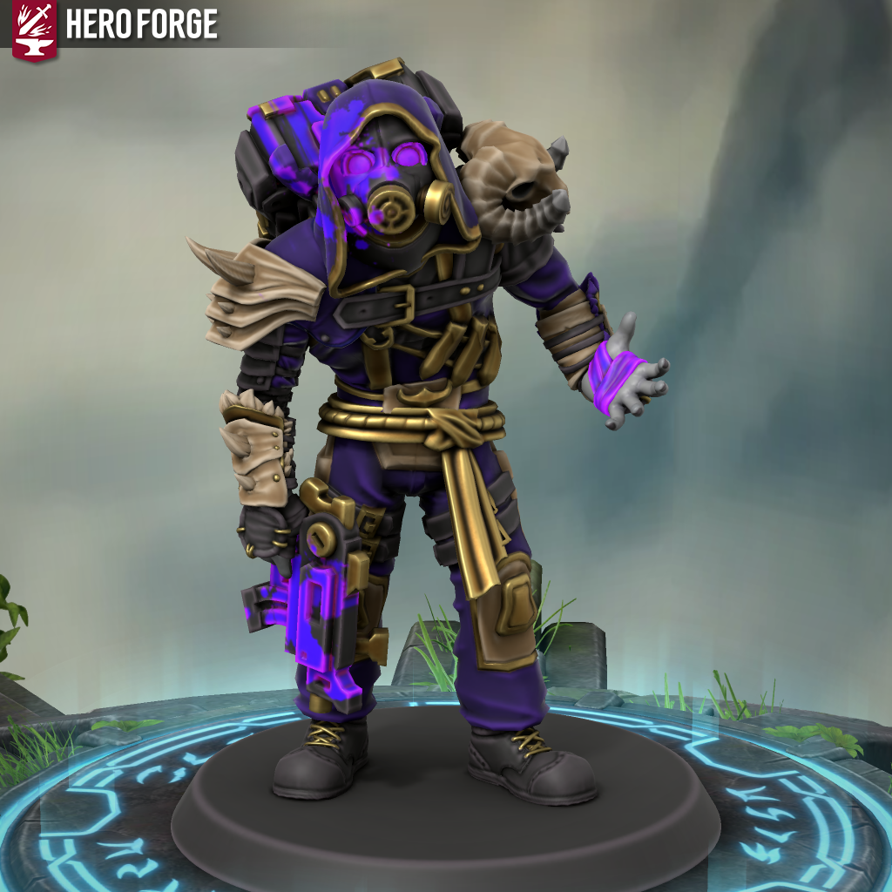
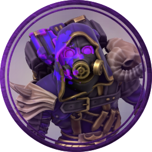

Муха
Средний гуманоид, хаотично-нейтральный
Класс доспеха 14
Хиты 51 (8d8+15)
Скорость 30, полёт 10
Уровень опастности 2 (400 опыта)
| СИЛ 9 (-1) |
ЛОВ 12 (+1) |
ТЕЛ 10 (0) |
ИНТ 11 (0) |
МУД 16 (+3) |
ХАР 13 (+1) |
Навыки Магия +3, Запугивание +2
Спасброски Интеллект +2, Сила +1, Телосложение +3
Споротивление урону некромантией
Бонус мастерства +2
Чувства пассивное восприятие 14
Языки общий
Накопление энергии. Некоторыми своими способностями Муха собирает единицы Некротической энергии, которые он может тратить на некоторые свои заклинания. Если заклинание требует Некротическую энергию, то оно не может быть использована, если энергии не хватает. Максимум у Мухи может быть 3 энергии
— Действия —
Пистолет-пулемёт (до 8 выстрелов).Дальнобойная атака оружием: -2, дальность 35/135, скорострельность 4, Боекомплект (12/Мелкий/Обычная). Попадание: 2 (1к4) урона.
Удар кулаком.Рукопашная атака оружием: +1, досягаемость 5 фт, Одна цель. Попадание: 2 (1к4) урона.
Некротический заряд (Заклинание). Тратит 1 единицу Некротической энергии. Дальнобойная атака заклинанием: +1, дальность 60. Попадание: 3 (1к2+1) некротического урона.
— Бонусные действия —
Проклятие (Заклинание). Муха накладывает проклятие на цель, которую может видеть в радиусе 60 футов. Цель получает 1 урон некротической энергией, а муха 1 единицу Некротической энергии
— Легендарные действия —
Самосожженеие (Заклинание). Муха покрывает своё тело фиолетовым некротическим пламенем. Любое существо, коснувшееся монстра или поразившее его атакой ближнего боя, находясь в пределах 5 футов от него, получает 1 (1к2) урона огнём. Муха получает 4 (2к4) некротического урона в начале каждого своего хода, игнорируя сопротивление. Муха может прекратить гореть в свой ход.
Бес (Заклинание, 3 действия). Тратит 2 единицы Некротической энергии. Муха призывает Беса-козу на поле боя. Бес-коза ходит сразу после Мухи. Одновременно может существовать только один Бес-коза.
— Инвентарь —
У мухи при себе есть его заряженный на 8 патронов ПП, а также запасной магазин на 5 патронов.
— Описание —
Муха — сквиллер культист, поклоняющийся Баал-Зевуву. Получил свои силы благодаря нему-же. Его силами является создание и управление бесами, однако он далеко не единственный кто этим промышляет. Также некоторые способности взаимодействуют с некромантией, с которой как известно, Вельзевул тоже каким-то образом связан. В бою он помимо заклинаний использует свой Пистолет-пулемёт, испачканый в светящейся жидкости, которую он использует для своих эксперементов. Муха почти никогда не использует его на максимум, делая максимум 3 выстрела за ход, а иногда даже меньше.
— Галерея —
 